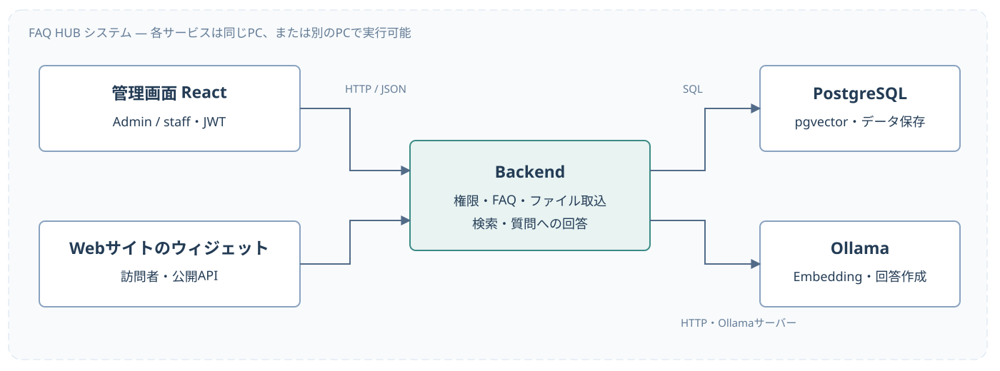

2. プログラムの概要
登録した各Webサイトをsiteと呼び、FAQ・資料・設定をサイトごとに持つ。サイト内に埋め込むチャット画面をwidgetと呼ぶ。質問候補のボタンにはFAQのカテゴリ名を表示し、APIではsuggested_topicsとして返す。OllamaはPCまたはサーバーでAIモデルを動かすソフトウェア。「根拠」は、回答のもとになるFAQや資料の内容を指す。
全体構成

| 構成要素 | 担当する仕事 | ソースの場所 |
|---|---|---|
| 管理画面 | React画面でサイトを選択し、JWTとともに管理操作を送信する。FAQのExcelはブラウザで読み込む。 | chatbot-frontend/src/pages/admin |
| ウィジェット | 会話、質問の送信、FAQ画像、評価ボタン、問い合わせリンクを表示する。 | chatbot-frontend/src/widget |
| Backend | 認証・権限確認、資料の読込、Embedding作成、DB検索、回答処理を行う。 | chatbot-backend/src/app.ts / src/modules |
| PostgreSQL | 設定、本文、ベクトル、会話と参照関係を保存する。 | database/schema.sql |
| Ollama | Embedding用モデルとFAQ選択・回答用モデルを実行。既定の回答モデルはgemma3:4b、Embeddingはnomic-embed-text。 | src/modules/ai |
| ファイル保存領域 | uploads/faq-imagesにFAQ画像を保存。取込資料は一時フォルダを使い、要求終了後に削除する。 | faq-images.route.ts / knowledge.route.ts |
2.1 主なデータの流れ
質問・回答を入力 → 権限と重複を確認 → FAQを保存 → 承認して公開 → 登録済みの回答を返す。
資料をアップロード → 本文を読込 → 文章を分割 → Embeddingを作成 → transactionで資料と本文を保存 → 承認 → 関連する文章を探してAIが回答する。
評価ボタン（👍／👎）を押すと、選択したボタンの表示が変わります。